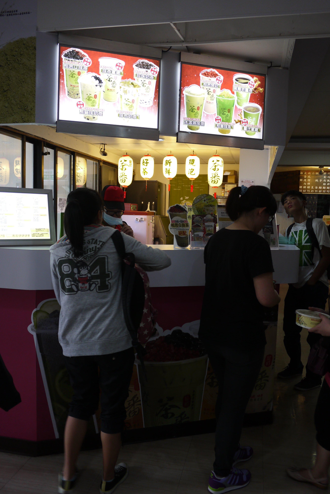
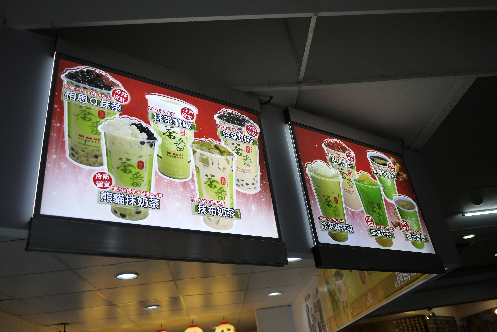
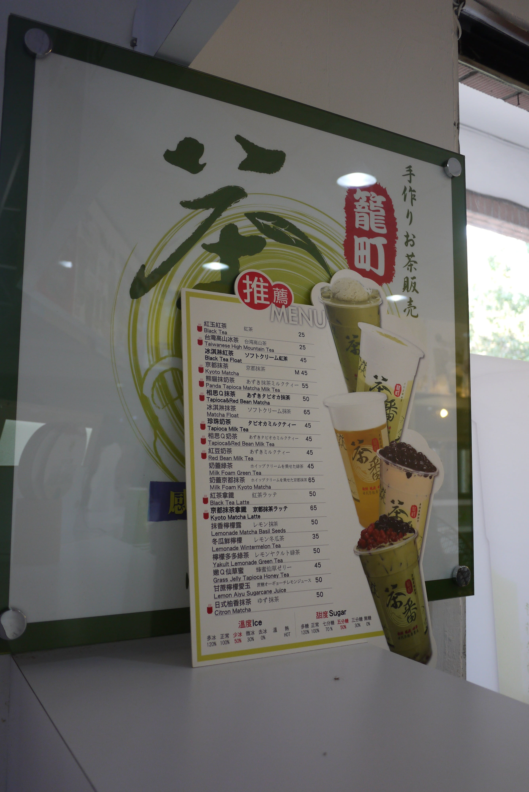
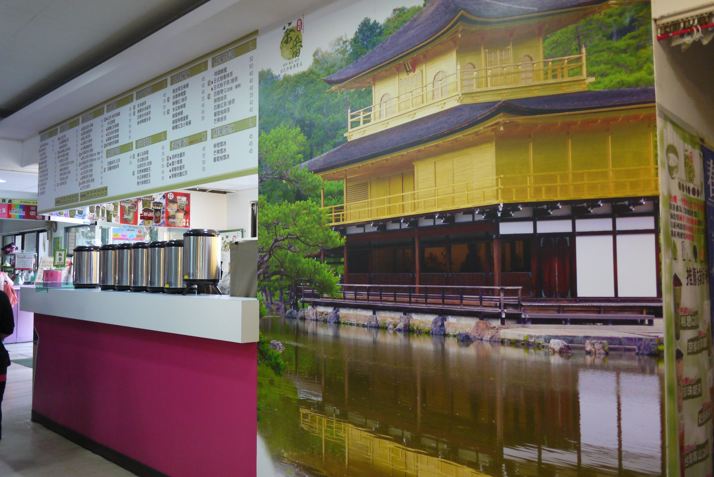

籠町茶番
金閣屋 | 日式食堂 | 籠町茶番 | 廣誠素食意式廚房| 華克山莊傳統韓國料理|
椰林燒臘| 吉登自助餐| 比司多Bistro
悠悠鮮果屋|
- 本校營業地點位置 大一女宿舍
- 餐飲業者名稱 籠町茶番日式茶飲專賣店
- 公司名稱 國煦有限公司
- 營業時間及休息日 11:00 ~ 20:00
- 聯絡電話 (02)2363-8896
- 營業項目、型態 飲料
- 業者簡介
《籠町.茶番》是日式茶飲專賣連鎖店，堅持手作茶物販賣，提供新鮮現泡好茶！
著重健康天然的日式茶飲風格，以「京都抹茶紅豆」系列產品最負盛名。
採用日本優質抹茶搭配正宗台灣萬丹紅豆，口感綿密風味絕妙，嚐一口絕對擄獲您的心！
餐廳業者參考照片
-



